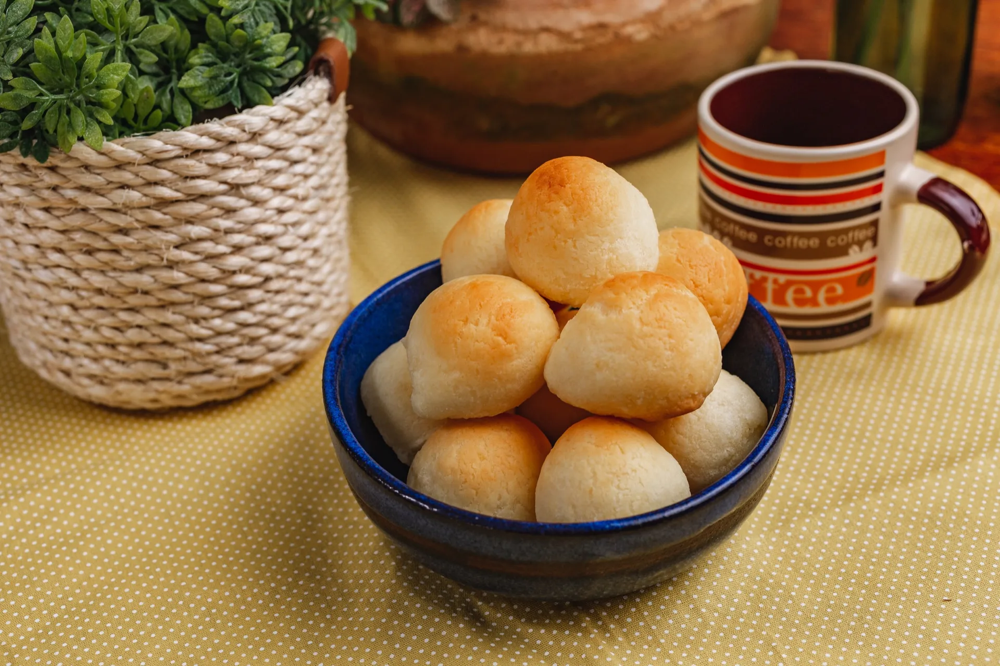
Para você saborear a qualquer hora com sua família, de forma rápida e prática as delícias que só a Dona Cuca tem.
Mais informações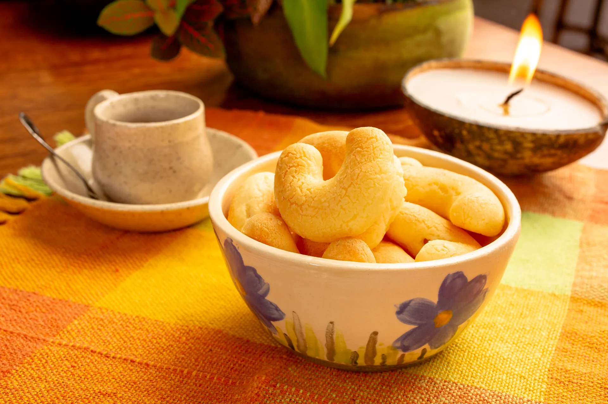
A união perfeita da tradição mineira com a praticidade que o seu dia a dia pede, em uma embalagem com o sabor de casa.
Mais informações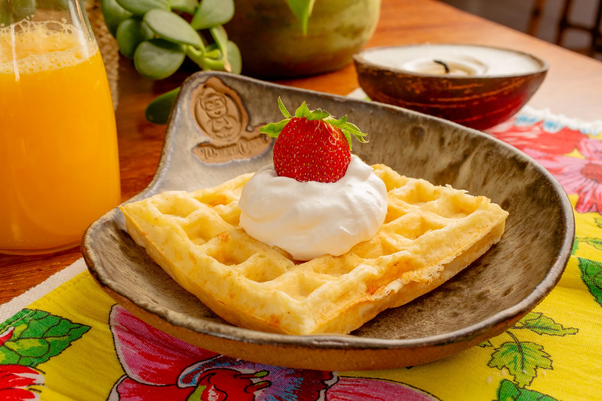
Momentos inesquecíveis merecem sabores e receitas especiais. Produtos feitos com muito carinho.
Mais informações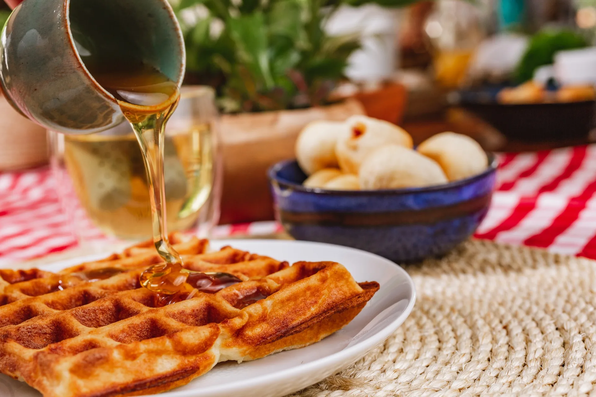
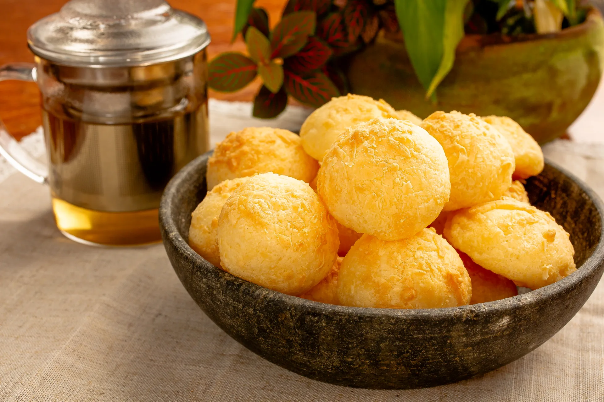
Pão de queijo delicioso! Sabor de queijo de verdade! Os recheados são indescritíveis também! Todo mundo que prova quer mais!!!
Pão de queijo de excelente qualidade, com ingredientes autênticos, ovo de verdade, queijo de verdade! Aprovado por mim e por toda a minha família! Recomendamos fortemente!
O produto é de alta qualidade. Embalado adequadamente. A entrega é pontual. A comunicação com a responsável é totalmente eficaz. Adoro os produtos e levo sempre para amigos.
O Pão de Queijo mais saboroso que eu, minhas filhas e amigos já comemos. Além de sabor tem qualidade e muito amor nos responsáveis por sua fabricação.
Uma experiência maravilhosa! O Pão de queijo da Dona Cuca é um "Manjar dos Deuses"! Simples assim!
Excelente, pães de queijo deliciosos e ambiente super agradável e acolhedor. Nota 1000!!!!
Pão de queijo de verdade!!! Simplesmente maravilhoso! Sabores sazonais sempre surpreendem!
Uma delícia!!!! Pão de queijo artesanal com ingredientes de qualidade.
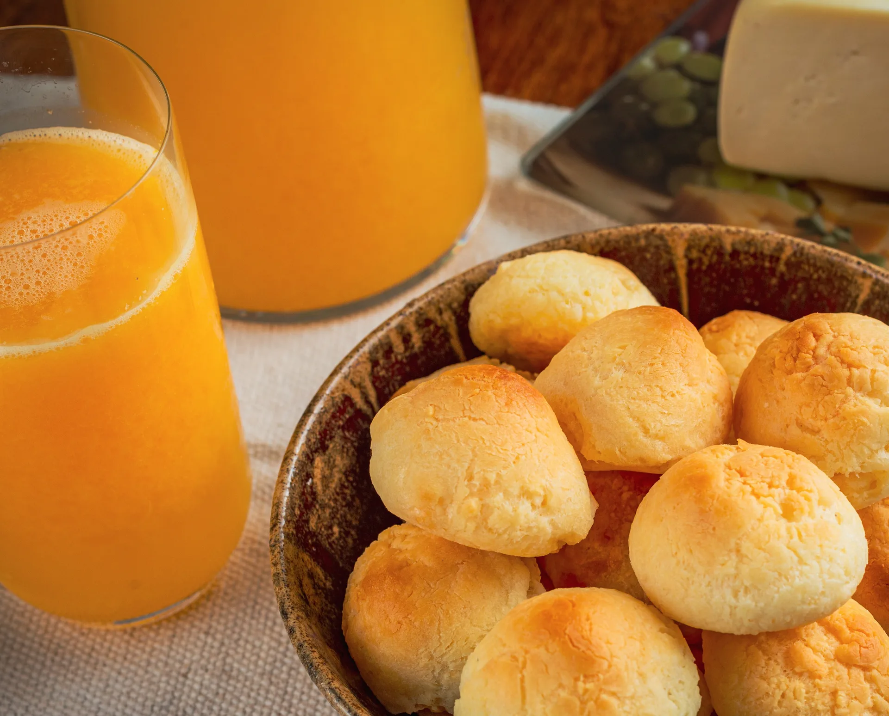
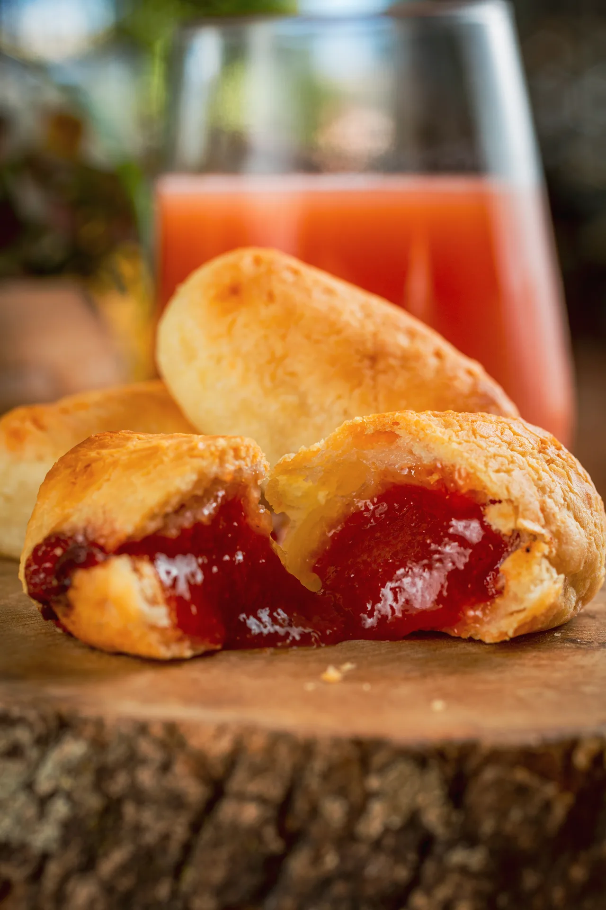
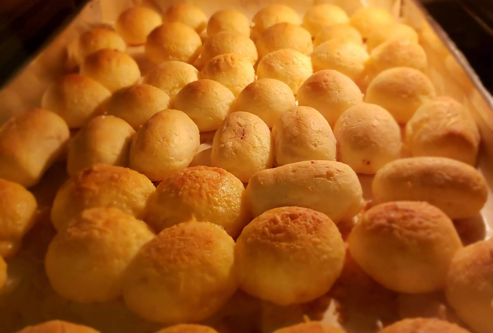
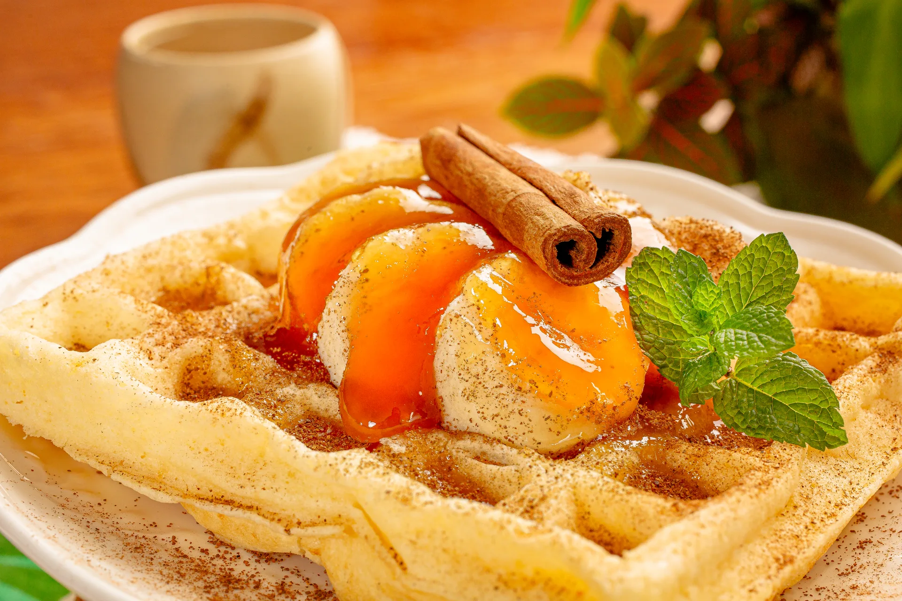
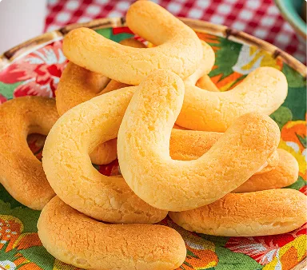
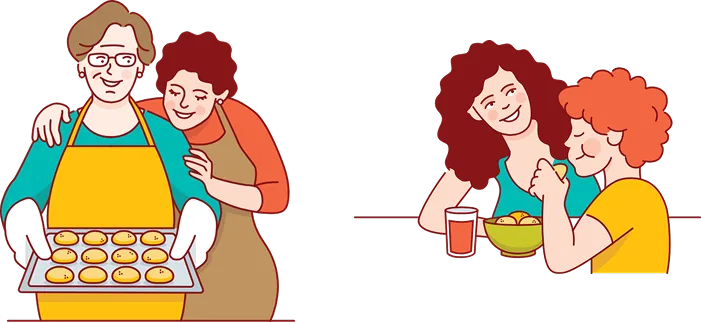
Apesar de oficialmente criada em 2016, a Dona Cuca iniciou sua história e sua trajetória em 1985, ainda sem saber que mergulharia profundamente no universo gastronômico.